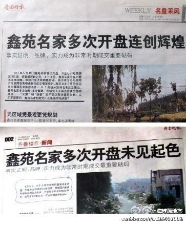

因不满开发商降价，通州京贸国际城的上百名业主围堵在小区入口，要求开发商退房或补差价，这帮臭傻逼就不配买房子，谁规定说房子只能涨价不能降价了？房子不也是商品么，房子涨价你们怎么没给开发商补差价呢？网页链接
上和城么？ //@方小太爷:哈尔滨也有啊，2008年某一天道外某楼盘被轮，两家报纸分别一个专版，说法完全相反…… //@哈尔滨房地产广告精选: 有时候报纸总是这样，哎~！ //@宫言：副標居然一樣的！@博源观察:同一天的报纸，同一个楼盘，同一个地方的两家报纸，《济南时报》和《齐鲁晚报》，一个在广告版，一个在新闻版，不评论，看图。@热门头条 

 网页链接
网页链接